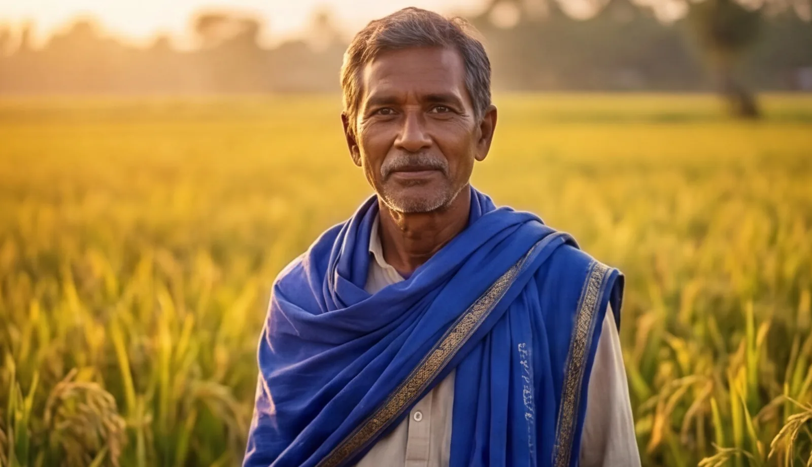
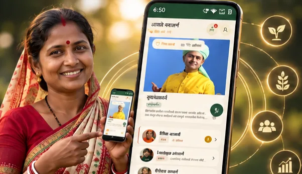
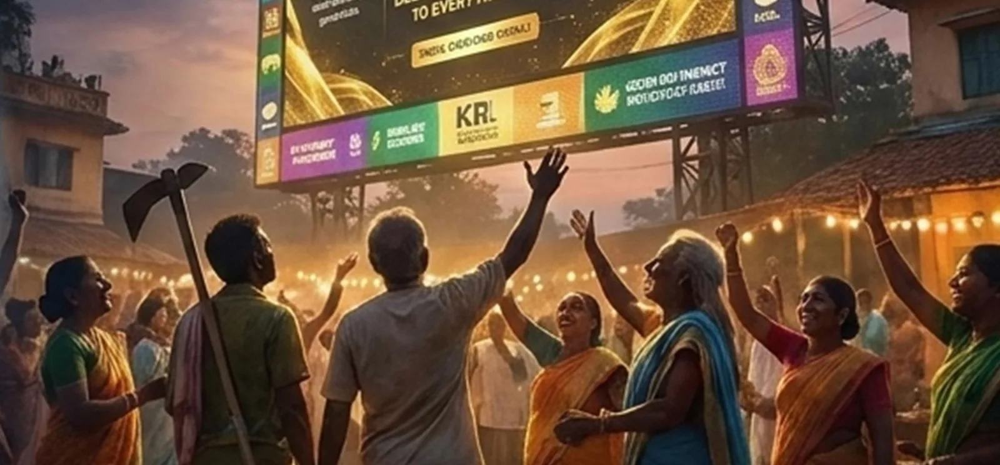
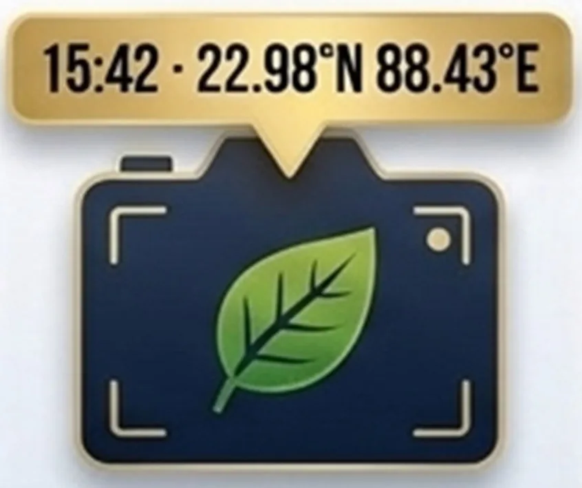
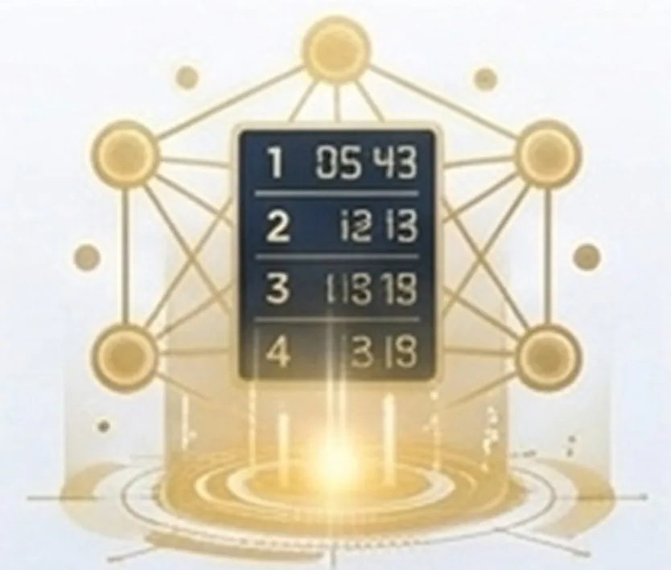
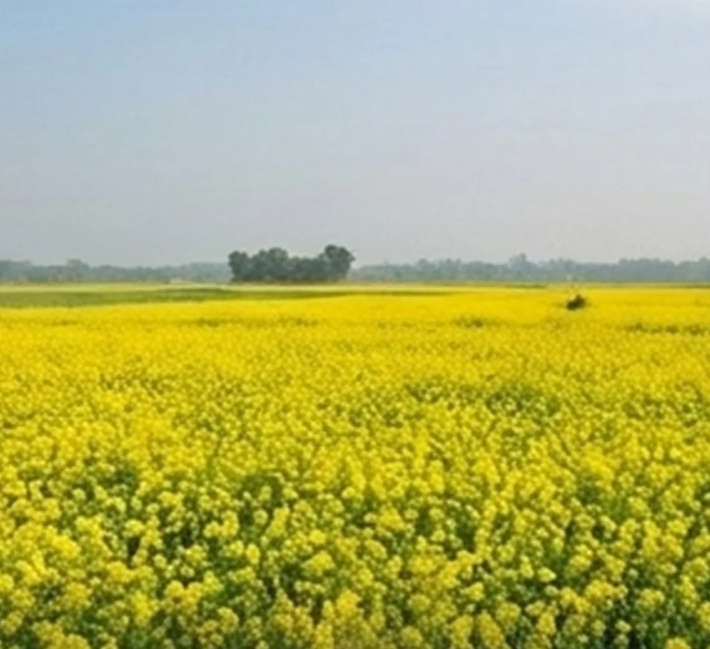
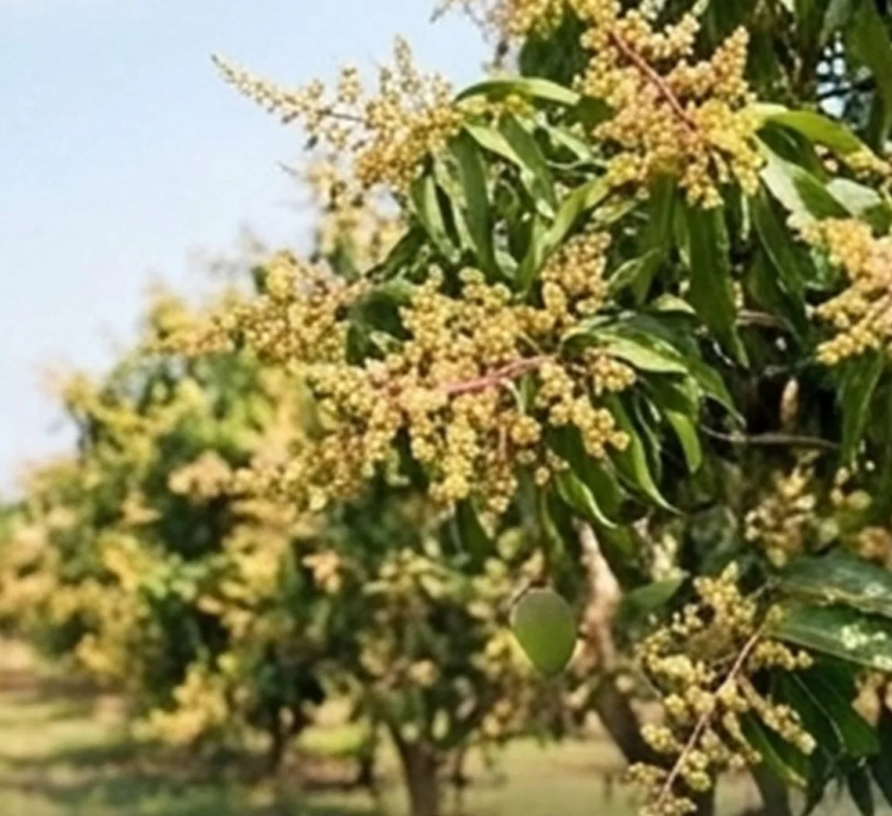
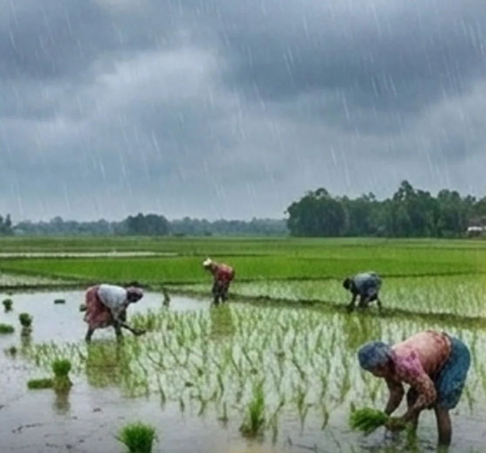
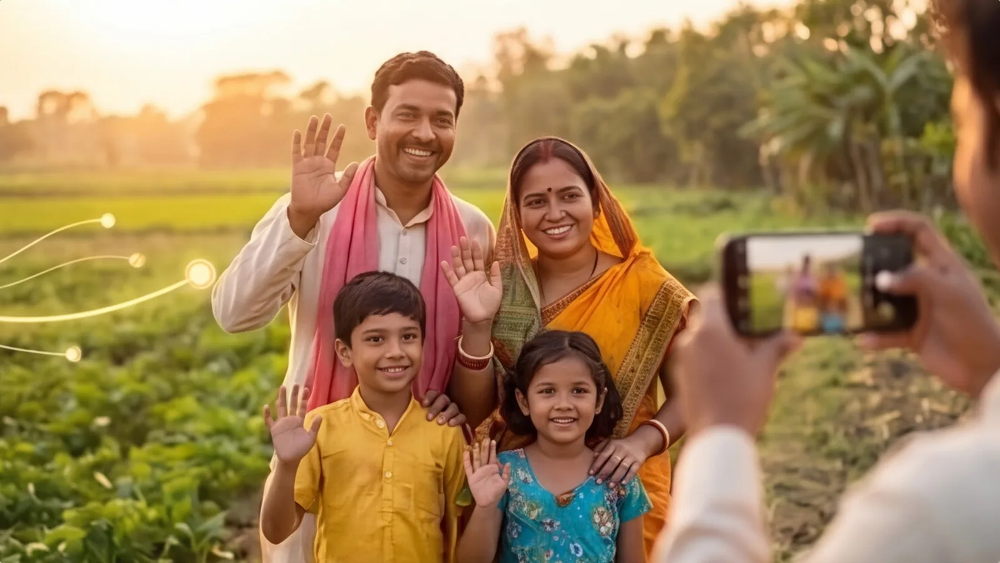

Satya সত্য
Truth and technologyClean, residue-free harvests and honest, open use of technology.
KRL Vision
Season 1 runs from Puja 2026 to Puja 2027. Here is the whole plan in one place: who plays, how farms are scored, who stands behind every team and what every village gains.
01 · How a farm is scored
Every farm is judged on the same four values. Income carries the most weight, but a farm cannot win on money alone.
Clean, residue-free harvests and honest, open use of technology.
Rich dark soil, plenty of earthworms and village workshops that keep going.
A farm that looks cared for, like paths lined with flowers.
Value of the harvest, net profit per bigha and profit that keeps growing.
The harder the upgrade, the bigger the score multiplier.
Basic upgrades: pump timers, rainwater harvesting.
Joined-up systems: soil-moisture sensors, biofloc fish, vermicompost.
Advanced smart farming: solar pumps run from a phone, drone field mapping without spraying.
02 · Who plays
A farm is played by a squad, not one person. Every squad follows the same four rules.
At least 5 members.
At least one woman and one member under 25.
Zero harmful chemicals. No exceptions.
Guided by one of 225 blue-scarfed Acharyas. Each Acharya looks after 20 farms.

03 · Who stands behind every team
Technology to run it, people far from home to fund it, and a team owner to build its brand.

The Bengali voice app that plans, proves, checks and scores every farm.
Bengalis far from home back verified farms in their own villages. How it works is on the Bhite Mati page.

Owns and backs one of the 15 teams. Sponsors its 300 farms and drives its brand and retail.
04 · How the league runs
OmniDEL.AI runs the whole league in four steps, the same for every farm.
The farmer tells the Bengali voice AI what they plan to do.
Photos and data are saved with time and place stamps that cannot be changed.

The AI compares the new photos with the farm's starting point.
Approved results go onto a public scoreboard that nobody can edit.




Scores go public on the 5th of every month at www.krleague.in
05 · What every farm builds
A 3-bigha model farm earns from far more than one crop, and its success spreads to the families around it.
Every team launches its own branded, premium produce for shops and markets.
Scan the QR code on the pack to see the exact KRL farm it came from, with its current Satya, Mangal, Sundar and Samriddhi scores.
06 · The prize
OmniDEL.AI joins every farm to every market.
The proposed timeline
The plan calls for a statewide KRL launch, and the unveiling of a model farm at Munsibheri, built from a former dumpyard in 60 days.
The target is 4,500 active model farms across Bengal and a Durga Puja awards ceremony for the announced ₹3 crore season-one prize pool.

The long-term vision is a Bengal model of nature-aligned farming, rural enterprise and a living link between the diaspora and ancestral villages.